Implementación de un motor de expresiones regulares (en adelante, regexp) usando Java 6.0
La estrategia de diseño elegida ha sido la construcción de un Autómata finito no determinista, a partir de la regexp, y su posterior conversión a Autómata finito determinista para la ejecución de la misma.
Para construir los autómatas se parte de un árbol sintáctico construido tras un análisis léxico-sintáctico de la regexp. El análisis de la sintaxis se realiza mediante la implementación de un parser descendente-predictivo-recursivo.
La aplicación está implementada con Java 6.0 y se puede construir vía maven. Se incluyen algunos test de prueba. El proyecto sólo tiene tres dependencias:
* sfl4j-log4j 1.7.7 para logging. Principalmente mostrar en texto la estructura de los autómatas
* Apache Commons IO 2.4, usado sólo en los tests.
* JUnit 4.4 para tests.
Para construirlo, ejecutar
mvn package
Las imágenes utilizadass en este artículo han sido generadas usando el lenguaje DOT de Graphviz. Las clases que representan los autómatas y el árbol sintáctico tienen métodos toString() que generan estos datos.
Para ver este salida, establecer el nivel a DEBUG en el Log raíz configurado en el fichero fichero log4j.properties.
Se puede renderizar estos gráficos con la herramienta dot, incluída en el paquete graphviz, o con esta herramienta online.
No se profundizará mucho en la teoría de autómatas y lenguajes formales, sólo se cubrirá lo necesario para entender la arquitectura. Para ampliar información, nada mejor que las siguientes referencias:
| Caracteres | |
| x | El carácter x |
| \t | Tabulación. |
| \s | Espacio en blanco. |
| Clases de caracteres. | |
| [abc] | Uno de los caracteres entre corchetes. |
| [a-z] | Un rango de caracteres desde la a hasta la z (ambos incluídos) |
| [a-zA-Z] | Un rango de caracteres desde la a hasta la z o desde la A hasta la Z (ambos incluídos) |
| Cuantificadores. | |
| * | Cero o más veces. |
| + | Una o más veces. |
| ? | Cero o una vez. |
| Operadores | |
| | | Alternativa OR |
| (X) | Agrupación (cambio de orden de precedencia) |
| Caracteres especiales | |
| \x | Escapa carácter x |
| . | Cualquier carácter imprimible (Unicode) |
Orden de precedencia (de mayor a menor)
Las expresiones regulares serán especificadas en un String y debe ser compiladas antes de poder usarlas. La regexp se ejecutará sobre un buffer de char que contiene el texto.
El resultado de la búsqueda puede ser devuelto a un objeto tipo RegexMatchResult donde se almacenarán las posiciones de comienzo y longitud de las coincidencias. Las posiciones son indexadas desde cero.
El motor expone tres clases principales:
Es importante resaltar que el comportamiento de este motor es tipo ''eager'', es decir, en caso de expresiones tipo OR, como (a|b), el motor probará la primera de las expresiones alternadas y, en caso de no cumplirse, reinicirá el estado y probará la alternativa desde la última posición del texto que hay asido válida (retorna al principio si no se ha encontrado ningina coincidencia antes)
Cuando se encuentra una coincidencia, el análisis se detiene y el método match retornará true. Para continuar se debe especificar en el objeto RegexMatchResult la posición donde comenzar de nuevo y volver a llamar con esa nueva posición a match.
package es.chathispano.canalprogramacion.regexengine.tests;
import java.text.MessageFormat;
import es.chathispano.canalprogramacion.regexengine.Regex;
import es.chathispano.canalprogramacion.regexengine.RegexEngine;
import es.chathispano.canalprogramacion.regexengine.RegexMatchResult;
public class Example {
public static void main(String[] args) {
// texto a comprobar
String text = "kjdsk65sdksdk78odla98dasdf90dsakdsj";
// buscar números en el texo
Regex regex = RegexEngine.compile("[0-9]+");
// almacenar resultados de cada búsqueda
RegexMatchResult regexMatchResult = new RegexMatchResult();
// preparar input
char buffer[] = text.toCharArray();
// meintras encuentre números...
while (regex.match(buffer, regexMatchResult)) {
int start = regexMatchResult.getMatchStartPosition();
int length = regexMatchResult.getMatchLength();
System.out.println(MessageFormat.format("Encontrada coincidencia en posicion {0}. Texto que coincide: {1}",
start, text.substring(start, start + length)));
// comenzar desde la última coincidencia
regexMatchResult.setPosition(start + length);
}
}
}
Salida (posiciones desde columna cero):
Encontrada coincidencia en posición 5. Texto que coincide: 65 Encontrada coincidencia en posición 13. Texto que coincide: 78 Encontrada coincidencia en posición 19. Texto que coincide: 98 Encontrada coincidencia en posición 26. Texto que coincide: 90
El núcleo central de la aplicación reside en construir un autómata finito determinista, el cual es ejecutado por el objeto Regex. Recordar que un lenguaje regular, que es el tipo de lenguaje que describen las expresiones regulares, puede ser reconocido por un autómata finito determinista.
Diferenciamos dos partes a la hora de describir la aplicación:
Dada una regexp como java.lang.String se procederá a seguir los siguentes pasos hasta su compilación en un objeto de tipo Regex
Dada una regexp compilada en un objeto Regex, se realizan los siguientes pasos en su ejecución contra un texto:
Diagrama que presenta las fases de la compilación de la regexp.
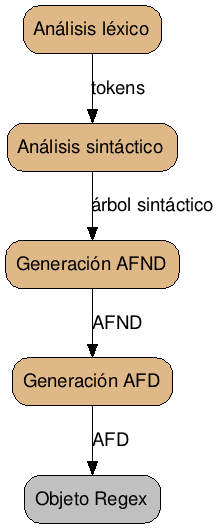
En la siguiente imagen se puede observar el autómata finito determinista que el motor construye para ejecutar la regexp
<[a-z]+:?[a-z]+[0-9]?\\s*(/>|>) (1)
que reconoce etiquetas html
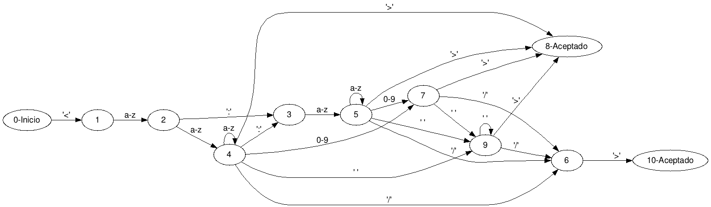
Se entiende por parseo de la regexp la tarea de analizar la expresión regular para compilarla.
La especificación de nuestro lenguaje regexp no puede hacerse mediante un lenguaje regular debido a que existen producciones de este tipo:
A -> xAy
O la necesidad de mantener las parejas de paréntesis o corchetes.
Se necesita entonces una gramática libre de contexto. Se especifica la gramática a usar en notación EBNF.
1. <regexp> ::= <quantified_expression> { <quantified_expression> } <regex>
2. <regex> ::= '|' <regexp>
3. | palabra_vacia
4. <quantified_expression> ::= <expression> [ <quantifier> ]
5. <expression> ::= <selector>
6. | '(' <regexp> ')'
7. <selector> ::= <symbol>
8. | <range>
9. <range> ::= '[' <char_range> ']'
10. <char_range> ::= <symbol>
11. | <escape_char> { <char_range> }
12. <symbol> ::= <char>
13. | <escape>
14..21 <char> ::= Caracteres imprimibles excepto '(' | ')' | '*' | '+' | '?' | '[' | '\' | '|'
22..30 <escape_char> ::= '(' | ')' | '*' | '+' | '?' | '[' | '\' | '|'
31..37 <escape> ::= '\' <escape_char> | 's' | 't' | '-' | ']' | '^' | '.'
38. <quantifier> ::= '*'
39. | '+'
40. | '?'
Esta gramática cumple la condición LL(1) Recordemos que, grosso modo, una gramática LL(1) es aquella que permite elegir una producción determinada con sólo leer un token por adelantado. Para otros tipos de gramáticas LL(k) para k > 1, la implementación del analizador sintáctico se complicaría considerablemente.
Siguiendo esta gramática, se ha establecido que un selector es cualquier símbolo que permita seleccionar texto. Por ejemplo, un carácter de la regexp o un rango son selectores.
Una expresión es o un selector o una agrupación (lo que va entre paréntesis) y una agrupación puede contener a otras regexp.
Una expresión cuantificada es una expresión seguida, opcionalmente, de un cuantificador. La regexp estará formada por una o más expresiones cuantificadas y opcionalmente unidas por el caracter '|' (alternativa u OR)
Una rango estará formado por una sucesión de uno o más símbolos entre los caracteres '[' y ']'
Se observa que en la especificación de rangos (producción 9) no se ha establecido nada sobre los guiones ni la posición de estos. Tal estrategia es debida a que se he dejado la interpretación de los rangos en la parte de la construcción del autómata finito no determinista, es decir, los rangos se establecen mediante un análisis semántico. Esto facilita construcciones de este tipo:
[[az\]]
que son válidas en la implementación PCRE. Se observa que '[' no se ha escapado, pero ']' sí. Sintácticamente resulta más complicado analizar estas diferencias que hacerlo mediante análisis semántico.
La misión del analizador léxico es agrupar el texto de entrada en piezas léxicas o símbolos indivisibles (comúnmente llamadas tokens) que serán enviadas al analizador sintáctico.
Hay que tener en cuenta que en en esta implementación los espacios y tabuladores no forman parte del lenguaje regexp en sí, por lo que esos caracteres son ignorados. En esta implementación no se permite el carácter de retorno de línea '\n'.
De esta gramática podemos elegir los tokens que constituirán el léxico. Antes de identificarlos, establecemos qué caracteres son reservados. Esto podemos deducirlo de las producciones 14 a 21
'(' ')' '*' '+' '?' '[' '\' '|'
Estos caracteres serán tratados como tokens específicos, cada uno con su ID:
'(' -> L_PARENTHESIS
')' -> R_PARENTHESIS
'*' '+' '?' -> QUANTIFIER
'[' -> R_BRACKET
'\' -> ESCAPE
'|' -> PIPE
Se creará el enum Token con los valores de estos tokens léxicos:
public enum Token {
/* tokens */
CHAR, L_PARENTHESIS, R_PARENTHESIS, L_BRACKET, PIPE, QUANTIFIER, ESCAPE,
/* elementos sintácticos */
REGEX, SELECTOR, RANGE, QUANTIFIED_EXPR, GROUP, EXPRESSION, CHAR_RANGE, REGEXP,
/* elementos auxiliares */
ROOT,
}
De momento no atenderemos a los tokens sintácticos.
El analizador sintáctico mantendrá una referencia a un analizador léxico, el cual utilizará para solicitar tokens.
El analizador léxico debe exponer un procedimiento que devuelva al analizador sintáctico los tokens desde la entrada:
Para codificar un analizador léxico, se lee una serie de caracteres (es conveniente leer al menos tantos como longitud de caracteres tenga el token más largo) y comprobar carácter a carácter hasta que encontremos que coincide con un token determinado.
leerTokenSiguiente <strong>return</strong> token
buffer = leerCarateresEntrada(minimo);
string tokenActual = nulo;
char caracter = leerCaracter(buffer);
case 'carácter por el que comience X'
tokenActual = leerBuffer(longitud token X)
.. resto de casos
ningun caso:
errorLexico(posicion);
fin leerTokenSiguiente.
Este pseudocódigo debe ser ejecutado cada vez que el analizador sintáctico pida un token nuevo para comprobar la gramática.
En nuestro caso sólo es necesario leer carácter a carácter sin necesidad de un búfer intermedio, ya que todos los tokens de la gramática tienen longitud uno.
El método que devuelve los tokens al analizador sintáctico queda:
public boolean readToken() throws LexerException {
boolean charRead = readCharacter();
if (charRead) {
switch (character) {
case '[':
token = Token.L_BRACKET;
tokenValue = "[";
break;
case '(':
token = Token.L_PARENTHESIS;
tokenValue = "(";
break;
case ')':
token = Token.R_PARENTHESIS;
tokenValue = ")";
break;
case '+':
case '*':
case '?':
token = Token.QUANTIFIER;
tokenValue = String.valueOf(character);
break;
case '|':
token = Token.PIPE;
tokenValue = "|";
break;
case '\\':
verifyEscapeCharacters();
break;
default:
if (isValidChar(character)) {
token = Token.CHAR;
tokenValue = String.valueOf(character);
} else {
lexError("Carácter no válido");
}
}
}
return charRead;
}
Se observa que si llega un carácter '\' necesariamente el carácter siguiente ha de ser soportado para el escape. Esto lo comprueba el método:
/*
* Detectada secuencia de escape. Verificar que el siguiente caracter
* pertenece al conjunto de caracteres que pueden escaparse.
*/
private void verifyEscapeCharacters() {
if (readCharacter()) {
int charIndex = findEscapedChar(character);
if (charIndex >= 0) {
token = Token.ESCAPE;
tokenValue = String.valueOf(escape_chars_value[charIndex]);
} else {
lexError("Carácter " + character + " no forma parte de los caracteres de escape.");
}
} else {
lexError("Se esperaba " + Arrays.toString(escape_chars));
}
}
Donde los caracteres de escape permitidos han sido definidos de forma ordenada en un array, que es el que usa el método findEscapeChar
// caracteres de escape permitidos (ordenados)
private char[] escape_chars = { '(', ')', '*', '+', '-', '.', '?', '[', '\\', ']', '^' ,'s', 't', '|' };
// valor de los caracteres de escape (ordenados)
private char[] escape_chars_value = { '(', ')', '*', '+', '-', '.', '?', '[', '\\', ']', '^', ' ', '\t', '|' };
El analizador léxico también debe ignorar convenientemente algunos caracteres si procede. En este caso los espacios y los tabuladores son ignorados. De esto se encarga el método readCharacter
// caracteres ignorados por el analizador lexico
private char[] ignoredChars = { '\t', ' ' };
private boolean readCharacter() {
boolean charRead = false;
while (!charRead && index < regex.length()) {
character = regex.charAt(index++);
charRead = !isIgnoredChar(character);
}
return charRead;
}
private boolean isIgnoredChar(char pCharacter) {
return (Arrays.binarySearch(ignoredChars, pCharacter) >= 0);
}
El analizador sintáctico o Parser se encarga de verificar si la regexp está correctamente formada. Para ello comprueba que la secuencia de tokens que va entregando el analizador léxico cumple las especificaciones de la gramática que se ha definido.
El parser implementado es del tipo descendente-predictivo-recursivo. Este tipo de parsers son muy comunes y fáciles de implementar. Para poder codificarlos con facilidad es muy conveniente que la gramática dada sea LL(1), ya que leyendo sólo un token por adelantado omitimos la necesidad de "volver hacia atrás" en caso de que llegue un token que no corresponde con la producción que se analiza en ese momento.
Este tipo de parsers definen un procedimiento por cada producción de la gramática. En cada procedimiento, se consumen los tokens en el orden que se ha establecido en dicha gramática. Si al consumir un token este no es el esperado, se lanza error sintáctico.
Analicemos un caso sencillo. Las producciones 5 y 6 de la gramática son:
7. <selector> ::= <symbol>
8. | <range>
Para esta producción puede escribirse un método como el siguiente:
private void prSelector() {
if (match(Token.CHAR, Token.ESCAPE)) {
prSymbol();
} else if (token == Token.L_BRACKET) {
prRange();
}
}
Lo primero que observamos es que hay una sentencia if-else. Esto es debido a que la producción admite dos alternativas, como se puede observar. Esto implica que por cada alternativa de una producción en la gramática hay un sentencia condicional.
Esta sentecia decide si ir por una producción u otra, para ello se usa el método match, que comprueba si el valor del token leído coincide con alguno de los que se pasan por parámetro.
Se comprueba el token CHAR y el token ESCAPE porque precisamente la producción <symbol> está formada por esos dos símbolos terminales:
12. <symbol> ::= <char>
13. | <escape>
Viendo este comportamiento, podemos ver que estamos "analizando hacia abajo", ejecutando una verificación del token actual y llamando recursivamente a la producción adecuada en función del token leído. De ahí el nombre de Parser descendente-predictivo-recursivo.
La producción <symbol> tendrá su correspondiente método que la representa:
private void prSymbol() {
if (match(Token.CHAR)) {
consume(Token.CHAR);
} else if (match(Token.ESCAPE)) {
consume(Token.ESCAPE);
}
}
Se comprueba que el método tiene exactamente la misma estructura que la definición gramatical.
Aquí usamos un nuevo método: <em>consume</em>. Este método verifica que el token actual sea el solicitado y luego lee el siguiente token, "consumiendo" el token actual. La diferencia con el método match es precisamente que este último sólo verifica el token actual, pero no lee el siguiente token.
private Token consume(String c) {
String tokenValue = lexicalAnalyzer.getTokenValue();
if (!c.equals(tokenValue)) {
parseError(new String[] { c });
}
readNextToken();
return token;
}
En la línea 2 se puede ver cómo se obtienen los tokens usando el analizador léxico construído antes.
Si en la gramática tenemos expresiones de tipo cuantificador como { <produccion> }, simplemente usamos un while.
Analicemos el código para la siguiente producción:
1. <regexp> ::= <quantified_expression> { <quantified_expression> } <regex>
La cual indica "un <quantified_expression> repetido al menos una vez, seguido de una producción <regex>"
Codificamos el método según esta especificación gramatical:
private void prRegexp() {
// al menos un quantified_expression, luego es necesario verificar el primero. // Si el token que llega no corresponde a esa producción, es un error sintáctico
if (match(Token.CHAR, Token.ESCAPE, Token.L_BRACKET, Token.L_PARENTHESIS)) {
prQuantifiedExpression();
} else {
parseError(Token.CHAR, Token.ESCAPE, Token.L_BRACKET, Token.L_PARENTHESIS);
}
// seguido de cero o más ({ <quantified_expression> })
while (match(Token.CHAR, Token.ESCAPE, Token.L_BRACKET, Token.L_PARENTHESIS)) {
prQuantifiedExpression();
}
// ahora necesariamente irá una producción regex()
prRegex();
}
Se muestra ahora el código completo simplificado (sin la parte que crea el árbol sintáctico y omitiendo algunos métodos de utilidad) del analizador sintáctico:
public class Parser {
private LexicalAnalyzer lexicalAnalyzer;
private Token token;
public Parser(LexicalAnalyzer pLexicalAnalyzer) {
lexicalAnalyzer = pLexicalAnalyzer;
}
public void analyze() {
// un símbolo adelantado
readNextToken();
if (token == null) {
throw new SyntaxException("Regex vacía.");
}
// entramos por la producción principal. A partir de ahí la recursión de
// producciones consumirá los tokens.
prRegexp();
// análisis sintáctico terminado.
// no debería haber más tokens si el parseo ha sido correcto.
if (token != null) {
parseError("Expresión no balanceada.");
}
}
private void prRegexp() {
// al menos un quantified_expression. Es necesario verificar el primero
// y si no hay, entonces es un error sintáctico
if (match(Token.CHAR, Token.ESCAPE, Token.L_BRACKET, Token.L_PARENTHESIS)) {
prQuantifiedExpression();
} else {
parseError(Token.CHAR, Token.ESCAPE, Token.L_BRACKET, Token.L_PARENTHESIS);
}
// seguido de cero o más.
while (match(Token.CHAR, Token.ESCAPE, Token.L_BRACKET, Token.L_PARENTHESIS)) {
prQuantifiedExpression();
}
// ahora un <regex>
prRegex();
}
private void prRegex() {
// si hay un pipe, necesariamente debe seguirle otra <regexp>
if (match(Token.PIPE)) {
consume(Token.PIPE);
prRegexp();
}
// o palabra vacia.
}
private void prQuantifiedExpression() {
// debe venir una expression
prExpression();
// opcionalmente puede venir un cuantificador
if (match(Token.QUANTIFIER)) {
consume(Token.QUANTIFIER);
}
}
private void prExpression() {
if (match(Token.CHAR, Token.ESCAPE, Token.L_BRACKET)) {
prSelector();
} else if (match(Token.L_PARENTHESIS)) {
consume(Token.L_PARENTHESIS);
prRegexp(); // debe haber una regex entre los paréntesis
consume(Token.R_PARENTHESIS);
}
}
private void prSelector() {
if (match(Token.CHAR, Token.ESCAPE)) {
prSymbol();
} else if (token == Token.L_BRACKET) {
prRange();
}
}
private void prRange() {
// debe haber un '['
consume(Token.L_BRACKET);
if (match(Token.ESCAPE, Token.CHAR)) {
prCharRange();
} else {
parseError(Token.CHAR, Token.ESCAPE);
}
// cerrar el rango
consume("]");
}
private void prCharRange() {
// evita un rango vacio. Aqui se ha hecho un pequeño análisis semántico.
if (lexicalAnalyzer.getTokenValue().equals("]")) {
parseError(Token.CHAR, Token.ESCAPE);
}
/*
* El bucle while se puede consumir cualquier carácter excepto ']'. El
* léxico enviará tokens como L_PARENTHESIS o L_BRACKET si huiera
* caracteres '(' y '[', pero en este caso se ignoran y se tratan como
* CHAR.
*/
while (!lexicalAnalyzer.getTokenValue().equals("]")) {
consume(token);
}
}
private void prSymbol() {
if (match(Token.CHAR)) {
consume(Token.CHAR);
} else if (match(Token.ESCAPE)) {
consume(Token.ESCAPE);
}
}
// fin de los métodos asociados a las producciones.
private void readNextToken() {
if (lexicalAnalyzer.readToken()) {
token = lexicalAnalyzer.getToken();
} else {
token = null;
}
}
private boolean match(Token... pToken) {
for (Token t : pToken) {
if (token == t) { // uso == por null-safe
return true;
}
}
return false;
}
private Token consume(Token pToken) {
if (!token.equals(pToken)) {
parseError(pToken);
}
readNextToken();
return token;
}
private Token consume(String c) {
String tokenValue = lexicalAnalyzer.getTokenValue();
if (!c.equals(tokenValue)) {
parseError(new String[] { c });
}
readNextToken();
return token;
}
private void parseError(Token... tokens) {
throw new SyntaxException(lexicalAnalyzer.getIndex(), tokens);
}
private void parseError(String[] c) {
throw new SyntaxException(lexicalAnalyzer.getIndex(), c);
}
private void parseError(String msg) {
throw new SyntaxException(lexicalAnalyzer.getIndex(), msg);
}
}
Realmente lo que se está haciendo es simular un autómata a pila, que es el tipo de autómata que reconoce gramáticas libres de contexto.
Construir el árbol sintáctico resulta muy sencillo en un analizador como el implementado, ya que al hacer las llamadas de forma descendente y recursiva, facilita considerablemente la tarea de manejar una estructura de datos de estructura arbórea. De hecho, este árbol sintáctico no es más que un reflejo de todas las llamadas a cada una de las producciones que se van realizando en la ejecución del analizador sintáctico.
Un nodo sintáctico se representa con la siguiente clase:
public class ASTNode {
private String value = "";
private List<ASTNode> children;
private Token type;
private int positionInRegex;
public ASTNode(Token pType, int position) {
type = pType;
children = new ArrayList<ASTNode>();
positionInRegex = position;
}
public ASTNode(Token pType, String pValue) {
type = pType;
value = pValue;
}
public String getValue() {
return value;
}
public void setValue(String value) {
this.value = value;
}
public Iterable<ASTNode> getChildren() {
return Collections.unmodifiableList(children);
}
public void addChild(ASTNode childNode) {
children.add(childNode);
}
public Token getType() {
return type;
}
public void setType(Token type) {
this.type = type;
}
public boolean isEmpty() {
return children.isEmpty();
}
public int getChildrenCount() {
return children.size();
}
public int getPositionInRegex() {
return positionInRegex;
}
}
Para construirlo sólo es necesario que cada método que representa una producción construya su propio nodo y lo retorne. Al ser llamadas recursivas, los nodos se irán añadiendo al árbol siguiendo el orden sintáctico.
Cada producción instanciará un objeto ASTNode y le asignará un token y su valor. Al mismo tiempo, añadirá como nodos hijos las llamadas a las producciones hijas que tenga.
Por ejemplo, para la producción <expression>
private ASTNode prExpression() {
ASTNode node = createNode(Token.EXPRESSION);
if (match(Token.CHAR, Token.ESCAPE, Token.L_BRACKET)) {
ASTNode n = prSelector();
addChildNode(node, n);
} else if (match(Token.L_PARENTHESIS)) {
ASTNode nodeGroup = createNode(Token.GROUP);
consume(Token.L_PARENTHESIS);
ASTNode regex = prRegexp();
consume(Token.R_PARENTHESIS);
addChildNode(nodeGroup, regex);
addChildNode(node, nodeGroup);
}
return node;
}
Se observa cómo cada producción retorna su propio nodo y estos se añaden como hijos al nodo actual.
Para una regexp como ab+, se genera el siguiente árbol sintáctico:
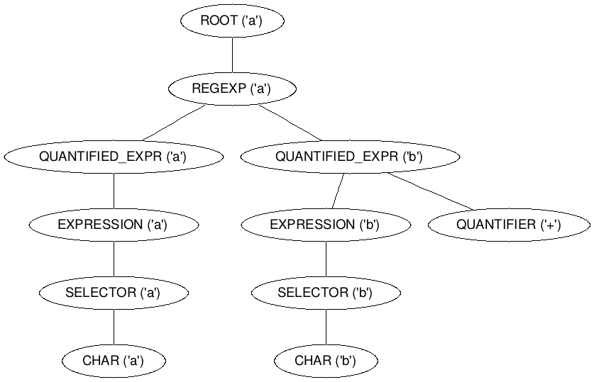
Tomando como base que un autómata puede representarse mediante un grafo dirigido, la estructura elegida para representar este grafo ha sido utilizar listas de adyacencia. Esto consiste en guardar en cada nodo del grafo, que en este caso es un estado del autómata representado por la clase State, los punteros a los estados con los que está conectado. Cada puntero al siguiente estado representa una transición al próximo nodo o estado.
/**
* Clase que representa un estado en un autómata finito.
*/
public class State implements Comparable<State> {
// conjunto de transiciones para este estado
private List<Transition> transitions;
// indica que es inicial
private boolean initial = false;
// indica que es final o de aceptación
private boolean end = false;
private int id = -1;
// conecta un estado con otro por medio de una transición.
public void connect(Transition transition, State pState) {
transition.setNextState(pState);
transitions.add(transition);
}
}
Cada transición en sí misma es un objeto de la clase Transition, que representa el tipo de transición al siguiente estado.
public abstract class TransitionBase implements Transition, Comparable<Transition> {
private State nextState;
private String representation;
public State getNextState() {
return nextState;
}
public void setNextState(State nextState) {
this.nextState = nextState;
}
// conecta un estado con otro por mediao de una transición.
public void connect(Transition transition, State pState) {
transition.setNextState(pState);
transitions.add(transition);
}
}
El objeto Transition es una interfaz que es implementada por una clase por cada tipo de transición:
La clase para el autómata, Automaton, contendrá una referencia al primer estado, así como la lista de transiciones usadas y la lista de estados. Mantener las dos listas anteriores viene muy bien a la hora de ejecutar el algoritmo que reducirá el AFND a un autómata determinista.
Un lenguaje regular puede ser analizado por un autómata finito no determinista (a partir de ahora, AFND) por lo que la siguiente fase del motor de regexp es generar este autómata.
Para generar un AFND a partir de una expresión regular, se puede seguir el algoritmo de Thompson. Este asocia cada expresión regular mínima con un autómata finito no determinista.
Veamos qué AFND se genera por cada regexp mínima:
Para la expresión regular a (o cualquier selector mínimo)
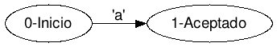
Para una regexp con cuantificador '+', por ejemplo a+
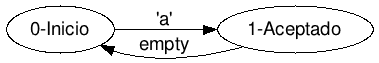
Para la regexp R con cuantificador '*', por ejemplo a*
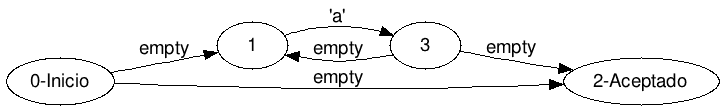
Para una regexp con cuantificador '?', por ejemplo a?
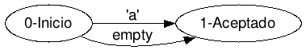
Para un regexp tipo 'R1|R2' como abc|def
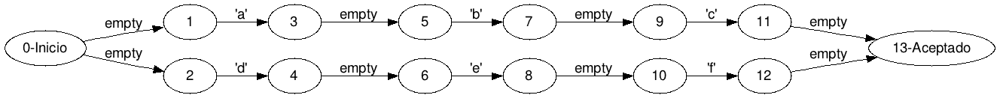
Para una agrupación (modificación de precedencia) tipo ab(c|d)ef
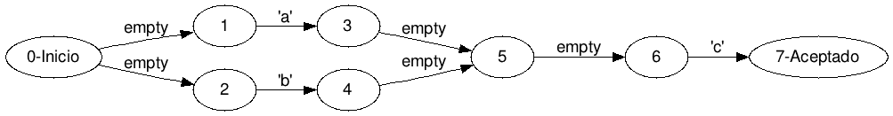
Para la regexp con varios selectores seguidos (concatenación) como 'abcd'
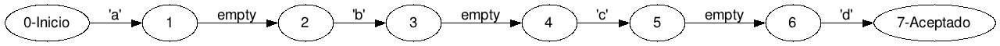
Los rangos siguen siendo selectores, por lo que los AFND generados son iguales a los de un sólo carácter. La diferencia fundamental es que para un rango tipo [a-z] no es óptimo crear 26 transiciones, por lo que se ha creado un tipo de transición que representa rangos.
Por ejemplo, la regexp [a-z]+ genera el siguiente AFND
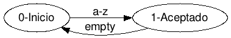
Para generar estos AFND se sigue un esquema parecido al analizador sintáctico, pero esta vez se analiza el árbol de nodos sintácticos que se ha generado. Cada nodo o producción tendrá su correspondiente método que genera el AFND mínimo.
Fijémonos ahora en el árbol sintáctico generado anteriormente. Comprobamos que por cada nodo tipo regexp hay una serie de expresiones cuantificadas en el primer nivel. Esto implica que para construir el AFND se irán analizando cada QUANTIFIED_EXPRESSION en el mismo nivel y por cada uno, analizar en profundidad su rama. A la vuelta de cada una de ellas, se guardarán los estados generados en una cola. Al final, se iterará sobre esta cola para ir concatenando todos los AFND.
Los autómatas que se van generando serán almacenados como un grafo de estados. Para representar esta estructura se usa la clase StatePair
/**
* Almacena un par de estados. Esta estructura será útil para ir construyendo el
* grafo que representa el autómata.
*/
class StatePair {
private State firstState;
private State secondState;
public StatePair(State firstState, State secondState) {
this.firstState = firstState;
this.secondState = secondState;
}
public State getFirstState() {
return firstState;
}
public void setFirstState(State firState) {
this.firstState = firState;
}
public State getSecondState() {
return secondState;
}
public void setSecondState(State secondState) {
this.secondState = secondState;
}
}
Basta con almacenar el estado inicial para comenzar la búsqueda en el grafo de estados, y el estado final para poder concatenar este grafo (o autómata) al siguiente que se genere.
La clase encargada de construir el AFND es AutomatonBuilder. El método generateNFA(ASTNode node) obtendrá el nodo raíz del árbol y lo enviará al método faBuildRegexp. Este método analizará el primer nivel desde el nodo enviado para ir almacenando las expresiones en una cola:
private StatePair faBuildRegexp(ASTNode pNode) {
StatePair headStatePair = null;
// cola de autómatas a concatenar
Queue<StatePair> statePairsQueue = new LinkedList<StatePair>();
for (ASTNode childNode : pNode.getChildren()) {
if (childNode.getType().equals(Token.QUANTIFIED_EXPR)) {
StatePair newExpressionPair = faBuildQuantifiedExpression(childNode);
/* añadir subconjunto de estados del autómata a la cola para
* unir todos posteriormente. Esto respeta el orden de
* prioiridad: primero las expresiones y luego el OR
*/
statePairsQueue.add(newExpressionPair);
} else if (childNode.getType().equals(Token.REGEX)) {
/*
Si hemos llegado aquí, es porque hay un OR. Seguimos el criterio de Thompson
para conectar los estados y cosntruir el AFND
*/
StatePair regexpPair = faBuildRegex(childNode, statePairsQueue);
// conectamos todos los estados anteriores, que forman r1
StatePair orStatePair = null;
headStatePair = statePairsQueue.poll();
orStatePair = headStatePair;
while (!statePairsQueue.isEmpty()) {
StatePair newStatePair = statePairsQueue.poll();
orStatePair.getSecondState().connect(createEmptyTransition(),
newStatePair.getFirstState());
orStatePair = newStatePair;
}
/*
* ahora r1 es un solo autómata que unimos al autómata del
* segundo operador del OR
*/
State q0 = new State();
State q1 = new State();
q0.connect(createEmptyTransition(), headStatePair.getFirstState());
q0.connect(createEmptyTransition(), regexpPair.getFirstState());
regexpPair.getSecondState().connect(createEmptyTransition(), q1);
orStatePair.getSecondState().connect(createEmptyTransition(), q1);
StatePair pipeStatePair = new StatePair(q0, q1);
statePairsQueue.add(pipeStatePair);
}
}
/*
* Se unen todos los subconjuntos de estados obtenidos a partir de los
* nodos sintácticos analizados.
*
* Estos son los nodos tipo <qualified_expression> que aún hay que
* procesar.
*/
headStatePair = statePairsQueue.poll();
StatePair tmpPair = headStatePair;
while (!statePairsQueue.isEmpty()) {
StatePair pair = statePairsQueue.poll();
tmpPair.getSecondState().connect(createEmptyTransition(), pair.getFirstState());
tmpPair = pair;
}
headStatePair.setSecondState(tmpPair.getSecondState());
return headStatePair;
}
Por cada QUANTIFIED_EXPRESSION se construirá el autómata que lo represente y se almacenará en la cola.
Llamando a faBuildQuantifiedExpressionse irá navegando en profundidad en la rama correspondiente del árbol sintáctico, llamando a su vez al método adecuado por cada nodo del árbol. Esto es exactamente la misa estrategia que se usó en el analizador sintáctico.
Por ejemplo, cuando llega un símbolo (como 'a') se ejecutará el siguiente método, que construirá el AFND mínimo para un símbolo:
private StatePair faBuildChar(ASTNode pNode) {
char character = pNode.getValue().charAt(0);
char initChar;
char endChar;
if (character == '.') {
initChar = ' ';
endChar = Character.MAX_VALUE;
} else {
initChar = endChar = character;
}
// crear la transicion tipo rango (de un carácter)
Transition t = new TransitionRange(initChar, endChar);
// crear los estados final e incial
State init = new State();
State end = new State();
// conectarlos
init.connect(t, end);
return new StatePair(init, end);
}
De esta forma ya hemos creado el AFND mínimo para el selector 'a'. Ahora este AFND se retorna al método que lo ha llamado para que a su vez lo añada al que ha creado, y así sucesivamente.
Analizaremos el método que genera una <quantified_expression> completa. Si nos fijamos en el nodo QUANTIFIED_EXPRESSION del árbol sintáctico de la regexp ab+:
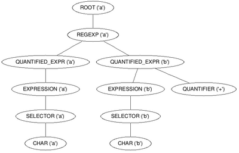
Vemos que si hay un cuantificador (en esta caso, '+'), se añade como hermano del nodo de la expresión a cuantificar. Ese cuantificador afecta a toda la rama anterior.
Lo siguiente es el código que genera el AFND para una expresión cuantificada. Primero genera el AFND de la expresión en sí para luego conectar los estados correspondientes a los cuantificadores, siguiendo los criterios de Thompson.
private StatePair faBuildQuantifiedExpression(ASTNode quantifiedExpression) {
StatePair headStatePair = null;
StatePair expressionPair = null;
for (ASTNode child : quantifiedExpression.getChildren()) {
if (child.getType() == Token.EXPRESSION) {
StatePair newExpressionPair = faBuildExpression(child);
if (expressionPair != null) {
Transition t = createEmptyTransition();
expressionPair.getSecondState().connect(t, newExpressionPair.getFirstState());
}
expressionPair = newExpressionPair;
} else {
// el nodo es de tipo cuantificador
if (child.getValue().equals("+")) {
Transition t = createEmptyTransition();
expressionPair.getSecondState().connect(t, expressionPair.getFirstState());
} else if (child.getValue().equals("*")) {
// conectar primero con ultimo con una transicion vacia
Transition t = createEmptyTransition();
expressionPair.getSecondState().connect(t, expressionPair.getFirstState());
// crear dos nuevos estados para '*'
State q0 = new State();
State q1 = new State();
q0.connect(createEmptyTransition(), expressionPair.getFirstState());
expressionPair.getSecondState().connect(createEmptyTransition(), q1);
q0.connect(createEmptyTransition(), q1);
expressionPair.setFirstState(q0);
expressionPair.setSecondState(q1);
} else { // tipo '?'
expressionPair.getFirstState().connect(createEmptyTransition(), expressionPair.getSecondState());
}
}
if (headStatePair == null) {
headStatePair = expressionPair;
}
}
return headStatePair;
}
Para la regexp anterior (ab+), el AFND resulta:
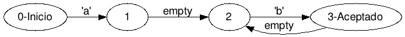
Es posible ejecutar un AFND para verificar la expresión regular contra un texto, pero resulta bastante engorroso de codificar. Hay que mantener dos pilas e ir alternando en función de los caracteres.
Resulta mucho más rápido y sencillo ejecutar un AFD; y precisamente aprovechamos el hecho de que todo AFND tiene un AFD equivalente (reconoce el mismo lenguaje regular)
Por ello tenemos que convertir el AFND en AFD usando un algoritmo llamado Construcción subconjunto
Este algoritmo consiste en agrupar los estados del AFND que resultan de leer un mismo símbolo de entrada, además de agrupar aquellos estados que se conectan entre sí con transiciones vacías.
El algoritmo usa tres operaciones básicas:
Si Qn es cualquier estado del AFDN:
Cierre-epsilon(Qn): Produce el conjunto de estados que se alcanzan desde el estado Qn usando la transición vacía. Siempre incluye el propio estado del que parte.
Esta operación permite obtener todos los estados que siempre son alcanzables partiendo de un estado determinado, de forma que pueden agruparse en uno sin problemas.
Si Sn es un estado del AFD que agrupa a estados del AFND:
Cierre-epsilon(An): Produce el conjunto de estados que pueden ser alcanzados con transiciones vacías desde cada uno de los estados agrupados.
Movimiento(Sn, 'caracter'): Retorna aquellos estados del AFND que son alcanzables usando el carácter especificado desde cada uno de los estados que agrupa Sn.
Pseudódigo del algoritmo subconjunto:
1 estadosAFD : list 2 S = cierre-epsilon(estado_inicial(AFND)) 3 Mientras estados sin marcar en estadosAFD hacer 4 S = obtener_un_sin_marcar(estadosAFD) 5 Por cada s=símbolo del lenguaje del autómata hacer 6 SM = Move(S,s) 7 si SM no es vacío 8 SM = cierre-epsilon(SM) 9 si (SM no esta en estadosAFD) entonces 10 estadosAFD = estadosAFD UNION SM 11 fin si 12 conectar SM con S con transición s 13 fin si 14 fin para 15 marcar(S); 16 fin mientras
Finalmente estadosAFD será el conjunto de estados del AFD.
Nos fijamos en la línea 5 del pseudocódigo del algoritmo. Esta especifica que hay que realizar las operaciones de agrupación por cada símbolo del lenguaje que reconoce el AFND. Realmente este lenguaje ya lo sabemos: es el conjunto de transiciones del AFND, de ahí que la clase Automaton almacene la una lista de todas las transiciones del autómata. Si no fuera así, habría que probar con todo el conjunto de caracteres Unicode.
Para este algoritmo se ha usado una clase auxiliar llamada SubSetState. Esta clase simplemente agrupa un Set de objetos State.
El código que realiza esta operación está tambien en la clase AutomatonBuilder; método generateDFA
public Automaton generateDFA(Automaton pNDAutomaton) {
List<SubSetState> estadosAFD = new LinkedList<SubSetState>();
// calcular cierre-epsilon del estado inicial
SubSetState S1 = epsilonClosure(pNDAutomaton.getInitialState());
S1.setInitial(true);
estadosAFD.add(S1);
// obetener esatdo no marcado
SubSetState subSetState = selectState(estadosAFD);
// mientras haya estados no procesados o marcados
while (subSetState != null) {
// por cada símbolo 'a' perteneciente al lenguaje
for (Transition t : pNDAutomaton.getAlphabet()) {
if (!(t instanceof TransitionEmpty)) {
// calcular a que estados se va con esta transición desde el
// subonjutno de estados
SubSetState moveState = epsilonMove(pNDAutomaton, subSetState, t);
if (!moveState.isEmpty()) {
SubSetState moCloseState = epsilonClosure(moveState);
// comprueba si no existe ya este estado agrupado.
SubSetState euqlState = findState(estadosAFD, moCloseState);
if (euqlState == null) {
estadosAFD.add(moCloseState);
} else {
moCloseState = euqlState;
}
Transition afdTransition;
try {
afdTransition = (Transition) t.clone();
} catch (CloneNotSupportedException e) {
throw new RuntimeException("Fallo en la copia de una transición.");
}
subSetState.getState().connect(afdTransition, moCloseState.getState());
}
}
}
subSetState.setMark(true);
// siguiente estado sin marcar
subSetState = selectState(estadosAFD);
}
// construir autómata determinista con los nuevos estados interconectados
Automaton dfa = new Automaton(S1.getState());
return dfa;
}
El AFD resultante para la regexp anterior (ab+) es:
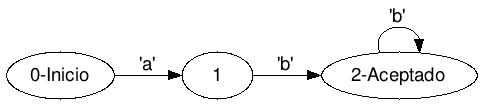
El último paso de la compilación es crear el objeto Regex y asignarle el objeto Automaton, que a su vez contiene el AFD generado. De esto se encarga el método compile de la clase RegexEngine
public static Regex compile(String regexExpr) throws RegexException {
LexicalAnalyzer lexicalAnalyzer = new LexicalAnalyzer(regexExpr);
Parser syntaxAnalyzer = new Parser(lexicalAnalyzer);
ASTNode syntaxNodeTree = syntaxAnalyzer.analyze();
LOGGER.debug("Arbol sintáctico:\n graph g {\n{}\n};\n", syntaxNodeTree.toString());
Automaton nfa = AutomatonBuilder.generateFromAST(syntaxNodeTree);
LOGGER.debug("Autómata NO determinista:\n digraph afnd {\n{}\n};\n", nfa.toString());
Automaton dfa = AutomatonBuilder.generateDFAFromNFA(nfa);
LOGGER.debug("Autómata Determinista:\n digraph afnd {\n{}\n};\n", dfa.toString());
return new Regex(dfa);
}
Este método cubre todas las fases de compilación que se han explicado.
Ahora es el turno de ejecutar la regexp contra un texto. Esta tarea la lleva a cabo el propio objeto Regex en el método match:
public boolean match(char[] buffer, RegexMatchResult regexMatcher) {
boolean stop = false;
boolean match = false;
// indice que apunta al comienzo de la coincidencia.
int matchStartPosition = -1;
// posicion actual
int position = 0;
if (regexMatcher != null) {
position = regexMatcher.getPosition();
}
// comienzo del automata
State currentState = finiteAutomaton.getInitialState();
// el autómata siempre quiere consumir caracteres
while (currentState.hasTransitions() && (position < buffer.length) && !stop) {
char c = buffer[position];
// enfrentar el carácter con la regex
Transition transition = matchTransition((char) c, currentState);
if (transition == null) { // no hay coincidencia
// si de todas formas estamos en un estado final, entonces hay match
if (currentState.isEnd()) {
match = true;
stop = true;
if (matchStartPosition == -1) {
matchStartPosition = position;
}
} else {
// reiniciar automata
currentState = finiteAutomaton.getInitialState();
position++;
// no hay posicion de comienzo de region
matchStartPosition = -1;
}
} else {
// coincide, avanzamos estado
currentState = transition.getNextState();
// registramos la posicion de comienzo de la coincidencia. La regex se cumplirá si el estado es de aceptacion
match = currentState.isEnd();
if (matchStartPosition == -1) {
matchStartPosition = position;
}
position++;
}
}
if (match) {
if (regexMatcher != null) {
regexMatcher.setMatchStartPosition(matchStartPosition);
regexMatcher.setMatchLength(position - matchStartPosition);
}
}
return match;
}
private Transition matchTransition(char c, State pState) {
Iterable<Transition> transitionList = pState.getTransitions();
if (transitionList != null) {
for (Transition t : pState.getTransitions()) {
if (t.match(c)) {
return t;
}
}
}
return null;
}
Un paso que no hemos implementado es la minimización del AFD, pero esta operación no siempre puede ser realizada.
Existen formas más sencillas de almacenar los autómatas, como usar matrices de adyacencia en lugar de listas. Esto implica una ganancia en el rendimiento de ejecución del autómata pero a cambio de un mayor uso de memoria.